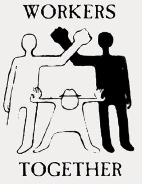

How to Diversify Your IWW Branch
For many IWW members, their regular meetings serve many purposes; it is a place to meet and catch up with friends, an outlet to work on a cause that means a lot to them, a place to gain skills, and a place to have fun. While these are all positive aspects of IWW branches, they may also be barriers to diversifying your group and/or attracting new members.
If you are organizing a workplace, diversity is essential to success.
If your organizing committee's demographics don't reflect the demographic mixture of your workplace, you will most likely lose the campaign, because your co-workers will not feel like they belong to the union, no matter how much the union pledges its support. A more diverse union branch is also essential. Diversity does not just mean diversity of ethnic and cultural backgrounds, but diversity of interests, lifestyles, and real-life situations.
Picture this:
You are a new IWW member and you attend your first meeting meeting. You arrive and a group of people are discussing various union-related matters, or working on a local IWW project. They hardly glance up as you enter and sit down. Conversation around you centers around a party or event that everyone else has attended recently and IWW or union jargon that you don't understand. The meeting adjourns and everyone leaves talking about plans for the following weekend. You leave feeling very isolated and unwelcome and decide that maybe the IWW simply isn't for you.
What went wrong?
Often, groups can appear to be clique-ish to new and outside members. Because group members feel comfortable in the make-up of their group, they may unconsciously turn inward and shut-out potentially new members. This is particularly true of groups who are predominately of one ethnic background (In the IWW in the USA the majority of groups have been predominately white and male in recent years). Minority groups often feel that IWW is therefore not relevant to their issues and/or that they are not really wanted in the group.
What Is Cultural Diversity?
A culturally diverse organization reflects the contribution and interests of diverse cultural and social groups in its mission, operations and product or service delivery; includes the members of diverse cultural and social groups as full participants, especially in decisions that shape the organization; and follows through on broader external social responsibilities, including support of efforts to eliminate all forms of social oppression and to educate others in multicultural perspectives.
Cultural diversity includes: race, ethnicity, gender, sexual orientation, economic backgrounds, political ideology, geography, religion, educational background, age, etc.
Why should your group culturally diversify?
First of all, any group is strengthened by a variety of voices. Besides the obvious advantage of increased membership, the potential for spreading the IWW's message increases as your group's scope of contact increases.
Since the working class is made up of people of all cultural, ethnic, and religious backgrounds, the IWW must remain committed to multiculturalism in all aspects of its work. Cultural diversity is not a simple goal, it takes a long-term commitment on a groups part and you should be prepared not to see major changes happen immediately.
- Take a hard look at your workplace and community. Do you relate to people at your workplace who're not part of your immediate social, ethnic, and cultural background?
- Are there communities that you know of that you have not had any contact with? Why not invite them to an informal meeting? Why not attend their meetings to get to know them?
- Evaluate your meeting site & time.
- Make sure the facility is wheelchair accessible,
- Where possible choose politically neutral and equally accessible settings.
- Make sure childcare is available if needed.
- Have bi-lingual materials available for distribution to workers. (The IWW publishes most literature in English, and a few pieces of information in other languages, but we can always use more, and translation of literature is one of our on-going projects).
- Develop a "buddy system" in which you link up a seasoned IWW member (as a mentor) with a new member. The mentor's job will be to make sure that the new member knows IWW "lingo" and also calls the new member to remind him/her about upcoming meetings and events.
- Co-sponsor events with other organizations when appropriate.
There are important guidelines to follow as the IWW when working with other organizations.
- The Industrial Workers of the World does not make permanent standing alliances with political parties, business unions, or non-political sects, because we believe that doing so undermines our mission of class solidarity. Permanent alliances create divisions among workers. However, we are not opposed to temporary alliances with local branches of organizations if these temporary alliances promote the goals and missions of the IWW. For example, your branch might need to work with the local chapter of another organization, such as Jobs With Justice, or an AFL-CIO union local in order to win an organizing campaign. If you do choose to form a temporary coalition, be sure you make the IWW's guidelines clear to the members of these other organizations.
- If you have any questions or doubts about these types of speaking engagements or events, discuss it beforehand with your branch or with other IWW members around the union.
Just remember, you and your group are representatives of the Industrial Workers of the World. Be sure you represent the organization and use its name in full accordance with the mandate and specific issues of concern to the organization.
Keep in Mind....
- If you do decide to attend other organizations' meetings, you should not go with the agenda of simply talking up the IWW, but you should go to actually build a relationship with the other group.
- Increase awareness of meeting date/time conflicts with religious observances (and people's work schedules).
- Increase sensitivity to dietary needs; if you are serving food be aware that many cultures shy away from pork and that vegetarianism is becoming more and more mainstream. On the other hand, don't insist upon vegetarianism either, because many members of the working class are regular meat eaters. Remember, it takes all types.
- Relationships can only be built when trust is established between groups..
- Practice noticing who's in the room at meetings - how many men, how many women, how many white people, how many people of color, is it majority heterosexual, are there out queers, what are people's class backgrounds. Don't assume to know people, but also work at being more aware.
- Count how many times you speak and keep track of how long you speak.
- Count how many times other people speak and keep track of how long they speak.
- Be conscious of how often you are actively listening to what other people are saying as opposed to just waiting your turn and/or thinking about what you'll say next.
- Practice going to meetings focused on listening and learning; go to some meetings and do not speak at all.
- Count how many times you put ideas out to the group.
- Count how many times you support other people's ideas for the group.
- Practice supporting people by asking them to expand on ideas and get more in-depth, before you decide to support the idea or not.
- Think about whose work and contribution to the group gets recognized.
- Practice recognizing more people for the work they do and try to do it more often.
- Practice asking more people what they think about meetings, ideas, actions, strategy and vision. White guys tend to talk amongst themselves and develop strong bonds that manifest in organizing. This creates an internal organizing culture that is alienating for most people. Developing respect and solidarity across race, class, gender and sexuality is complex and difficult, but absolutely critical - and liberating.
- Be aware of how often you ask people to do something as opposed to asking other people "what needs to be done".
- Think about and struggle with the saying, "you will be needed in the movement when you realize that you are not needed in the movement".
- Struggle with and work with the model of group leadership that says that the responsibility of leaders is to help develop more leaders, and think about what this means to you.
- Remember that social change is a process, and that our individual transformation and individual liberation is intimately interconnected with social transformation and social liberation. Life is profoundly complex and there are many contradictions. Remember that the path we travel is guided by love, dignity and respect - even when it is bumpy and difficult to navigate.
- This list is not limited to white guys, nor is it intended to reduce all white guys into one category. This list is intended to disrupt patterns of domination which hurt our movement and hurt each other. White guys have a lot of work to do, but it is the kind of work that makes life worth living.
- Day-to-day patterns of domination are the glue that maintain systems of domination. The struggle against capitalism, white supremacy, patriarchy, heterosexism and the state, is also the struggle towards collective liberation.
- No one is free until all of us are free.
Much of the information is taken from the Amnesty International National Student Program Guide and the the Colours of Resistance webpage and adapted for IWW use.